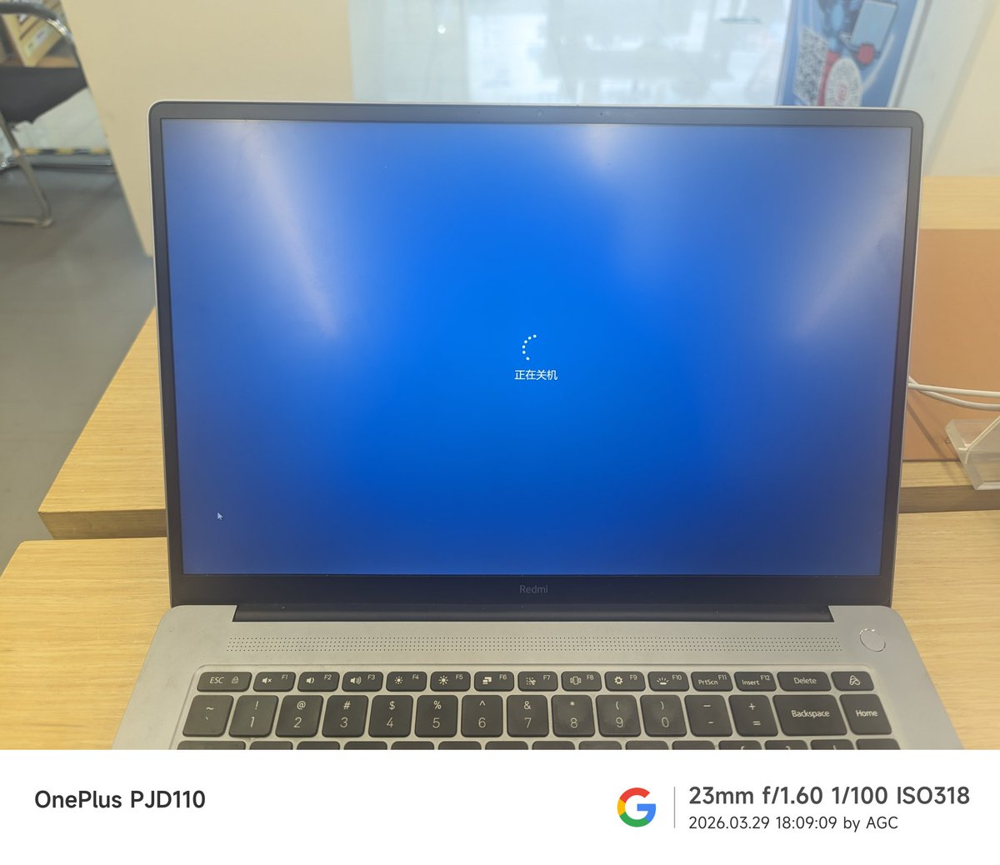

小虚空🍥
@tokerumaisurii
@RainBuild_2024 一台长得像跑着macOS的苹果但实际上是跑着Windows的小米的笔记本电脑（？

晴日向
@RainBuild_2024
从下班最后关掉电脑的那一刻开始，就已经意味着我这一年半的小米生涯也算是彻底结束了，在过去的一年半里，我为米家创造了130w的业绩，拿到了小米Master证书，从普通成员做到门店主理人，这一路走过来经历了太多的不容易，如若有缘，将有一天我会重回米家 https://t.co/jGCnqsHMW0